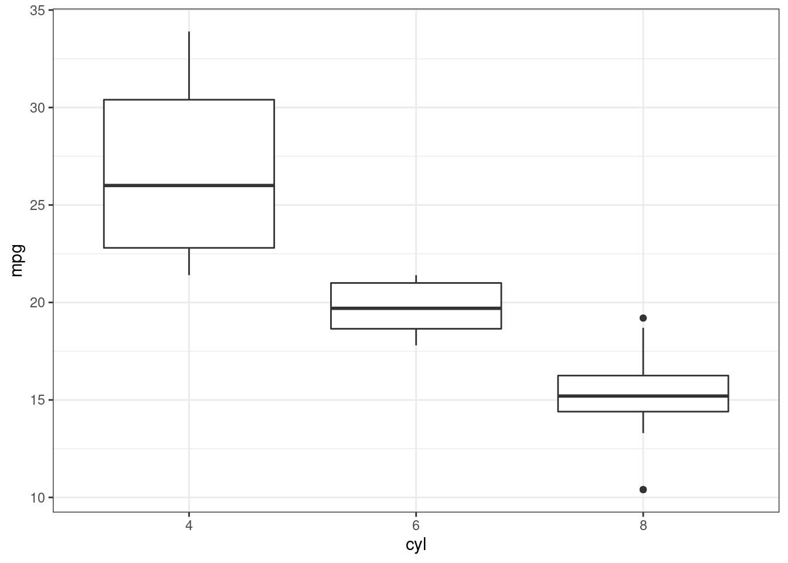

library("tidyverse")
theme_set(theme_bw())
library("plotly")What is plotly?
There are many ways to visualize data in R. Most users default to either base graphics or ggplot2; however, plotly is also an option. The main advantage of plotly is that it can make graphics interactive. For example, if you hover your mouse near a point you can get its exact coordinates. Another example is zooming into a specific region on a plot.
I know that many people are now thinking about shiny, but these packages provide different services. A shiny application allows for more customization and in depth interactivity; however, it must always be supported by a live R session. In plotly there is no need for a live R session. It is a more lightweight service.
Comparison to ggplot2
The function plot_ly allows the user to create plotly objects. However, no need to worry about learning an entirely new syntax for graphical objects. Fortunately for us, ggplot2 objects can be directly converted into plotly objects with the ggplotly function.
Let us consider a box plot using the mtcars data set in R. In the code below we visualize mpg by cyl.
# Create and save ggplot2 object
my_plot <-
mtcars |>
mutate(cyl = as_factor(cyl)) |>
ggplot(aes(cyl, mpg)) +
geom_boxplot()
# Plot ggplot2 object
my_plot
Notice the differences and similarities between the ggplot2 and plotly objects. Graphically they are identical; however, when we hover our mouse over the plotly version we are greeted with information and options. For instance, we can zoom into a single boxplot, get the exact numerical values, and save an image our altered plot.
# Convert ggplot2 object to plotly object
ggplotly(my_plot)Use Cases
The interactive use of plotly only shines in interactive mediums. Thus, if your graphic is only going to appear in a pdf, using plotly does not help. However, presentations in html format or jupyter notebooks, can be made more informative. This document is only a bare minimum introduction to plotly, but I hope that it can contextualize its use for the average R user.